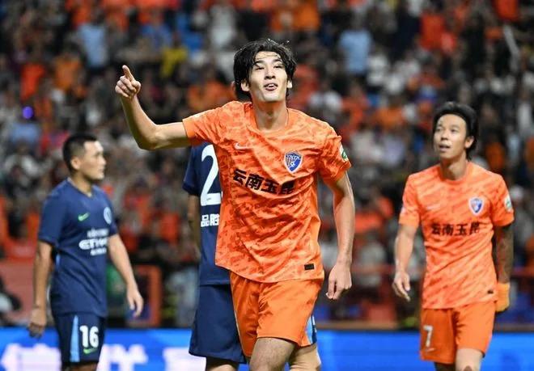
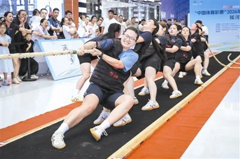
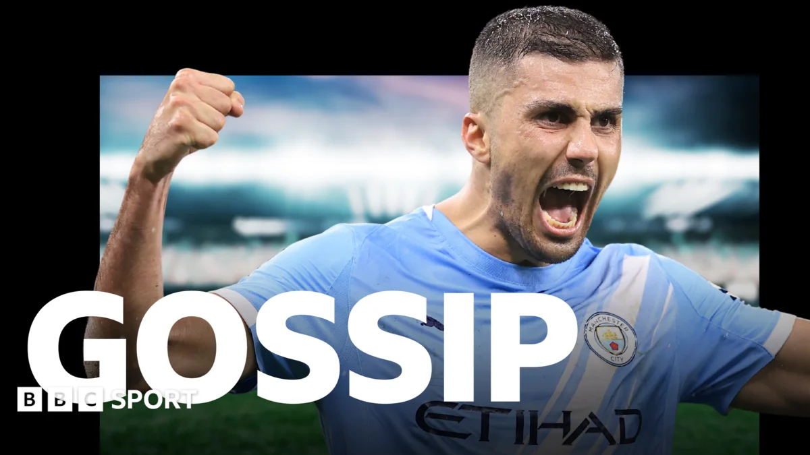

01
央视初定中超直播计划，大连英博对河南，海港对泰山
央视初步确定了中超联赛的直播计划，CCTV5将播出大连英博对阵河南的比赛，CCTV16则直播上海海港对阵山东泰山。

根据新浪体育的消息，央视已经初步拟定了中超联赛的直播安排。CCTV5体育频道将转播大连英博主场迎战河南队的比赛，而CCTV16奥林匹克频道则会播出上海海港与山东泰山的强强对话。这一计划意味着全国观众可以通过央视平台观看这两场关键对决。大连英博作为升班马，本赛季表现不俗，目前积分榜上处于中游偏上的位置，主场战绩尤其亮眼，球迷氛围热烈。河南队则稳居中游，打法务实，擅长防守反击。这场比赛对于大连英博来说，是巩固主场优势的好机会；对于河南队，则是争取积分、提升排名的关键战。另一场海港对阵泰山，则是积分榜前列的争夺战。上海海港本赛季攻击力强劲，拥有多名国脚级球员，而山东泰山传统强队，底蕴深厚。两队过往交锋互有胜负，每次碰撞都火花四溅。央视选择这两场比赛进行直播，显然考虑到了观赏性和竞争性。不过，具体直播时间还需等待官方最终确认，球迷们可以留意央视体育频道的节目预告。从战术角度看，大连英博擅长利用边路速度制造威胁，河南队则需要加强中场拦截；海港与泰山的对决，中场控制权将是胜负关键。对于普通观众，观看直播不仅能欣赏高水平比赛，还能学习战术配合，比如大连英博的快速反击或海港的阵地战渗透。建议你在比赛日提前打开电视或央视频App，感受现场氛围。同时，如果你自己踢球，可以观察球员的无球跑动和防守站位，这些细节对提升业余水平很有帮助。
伊恩的观察
如果你是中超球迷，记得关注央视的最终直播时间表，这两场比赛都很有看点。大连英博的主场氛围热烈，海港与泰山的对决则是技术流的碰撞。
02
中超最新积分战报：山东泰山爆冷，国安连丢两球翻车，浙江3-2险胜
中超联赛最新一轮战罢，山东泰山意外输球，北京国安在领先情况下连丢两球被逆转，浙江队则在一场进球大战中3-2险胜对手。

手机新浪网报道了中超最新积分战报。本轮比赛冷门频出，积分榜形势发生微妙变化。山东泰山本轮爆冷失利，面对实力不如自己的对手，泰山队未能发挥应有水平，最终输掉了比赛。具体来说，泰山队在开场后占据控球优势，但进攻效率低下，多次射门未能转化为进球。对手则抓住泰山后防的一次失误，由外援前锋打入制胜球。这场失利让泰山队错失了缩小与榜首差距的机会，也暴露出球队在破密集防守时的短板。北京国安则上演了令人扼腕的一幕：他们在上半场就取得两球领先，看起来胜券在握。然而下半场风云突变，对手加强逼抢，国安中场失误增多，被对手在短时间内连进两球扳平。更糟糕的是，补时阶段国安后防线再次出现漏洞，对手完成绝杀，国安惨遭翻车。这种从领先到输球的过程，对球队士气打击很大。浙江队则与对手上演进球大战，双方你来我往，最终浙江队以具体比分险胜，拿到宝贵三分。浙江队本赛季进攻火力分散，多名球员有得分能力，但防守端不够稳固，经常出现丢球。这场胜利让他们在积分榜上继续紧追第一集团。这些结果让积分榜形势更加混乱，争冠和保级集团都出现了新的变数。对于普通球迷，这些比赛告诉我们：足球比赛不到最后一刻不要放弃，国安的例子就是教训。业余比赛中，领先时保持专注同样重要，不要因为领先就松懈。同时，山东泰山的失利提醒我们，面对弱旅时也要全力以赴，任何轻敌都可能付出代价。
伊恩的观察
足球比赛不到最后一刻不要放弃，国安的例子就是教训。业余比赛中，领先时保持专注同样重要。
03
合肥市全民健身运动会上演“力量大比拼”
合肥市全民健身运动会举办了力量比拼项目，吸引了众多市民参与。同时，招远市第十六届全民健身运动会暨YBA篮球赛也拉开帷幕。

新浪财经报道，合肥市全民健身运动会近日上演了“力量大比拼”环节，包括举重、拔河等项目，参赛者既有专业选手也有普通市民。活动旨在推广力量训练，提升大众身体素质。现场气氛热烈，参赛者全力以赴，观众加油助威。举重项目中，选手们挑战不同重量级，展示了力量之美；拔河比赛则考验团队协作，各队伍齐心协力。与此同时，招远市也启动了第十六届全民健身运动会，其中YBA篮球赛是重头戏，吸引了多支队伍参赛。这些活动体现了全民健身的普及，鼓励更多人走出家门参与运动。力量训练对普通人很重要，不仅能增强肌肉，还能预防骨质疏松，改善体态。很多人在健身时只关注有氧运动，忽略了力量训练，其实两者结合效果更好。你可以从简单的俯卧撑、深蹲开始，每周坚持两到三次，每次做三组，每组十到十五次。如果条件允许，可以去健身房使用器械，但自重训练同样有效。对于篮球爱好者，YBA这样的业余联赛是很好的锻炼机会，既能提高球技，又能结交朋友。建议你关注当地体育局或社区公告，参与类似的全民健身活动。运动前记得热身，避免受伤；运动后拉伸，帮助恢复。力量训练后肌肉酸痛是正常现象，休息一两天就会缓解。
伊恩的观察
力量训练对普通人很重要，不仅能增强肌肉，还能预防骨质疏松。你可以从简单的俯卧撑、深蹲开始，每周坚持两到三次。
04
曼城面临罗德里报价，转会传闻四起
据BBC体育报道，曼城可能面临对中场核心罗德里的报价，同时其他转会传闻涉及维尼修斯、齐尔克泽等球员。

BBC体育的转会传闻栏目透露，曼城正在为可能收到的罗德里报价做准备。这位西班牙中场是球队的关键球员，上赛季在英超和欧冠中发挥出色，是曼城中场的节拍器。如果有俱乐部开出高价，曼城将面临艰难抉择。传闻中，可能对罗德里感兴趣的俱乐部包括皇家马德里和巴塞罗那，他们都在寻找顶级中场。此外，传闻还涉及皇家马德里的维尼修斯、曼联的齐尔克泽、伯恩利的特拉福德等球员。维尼修斯是皇马边路尖刀，但近期有消息称他可能寻求新挑战；齐尔克泽在曼联表现起伏，可能被租借或出售；特拉福德则是年轻门将，受到多支球队关注。这些消息虽未得到官方确认，但反映了夏季转会窗口的活跃。对于曼城来说，失去罗德里将影响中场控制力，瓜迪奥拉的战术体系需要他这样的球员来串联攻防。而其他球队则可能趁机补强。转会传闻听听就好，但可以关注官方消息。作为球迷，了解球员动态有助于理解球队战术变化。业余踢球时，中场核心的作用同样关键，多练习传球和视野，学会控制比赛节奏。如果你在踢野球，可以尝试模仿罗德里的踢法：拿球后先观察，然后分边或直塞，不要急于出球。同时，防守时注意站位，保护后防线。
伊恩的观察
转会传闻听听就好，但可以关注官方消息。作为球迷，了解球员动态有助于理解球队战术变化。业余踢球时，中场核心的作用同样关键，多练习传球和视野。
查看本章来源
BBC Sport · Man City brace for Rodri bid - Tuesday's gossipBBC · Football gossip: Rodri, Vinicius, Zirkzee, Trafford, Suzuki, Le Guen, Mbaye, Diomande, Vargas, Methalie, Lukic - BBC 05
格里夫斯创造板球奇迹：5次投球零失分
西印度群岛对阵巴基斯坦的测试赛中，贾斯汀·格里夫斯打出了一段不可思议的投球表现，连续五次投球让对手一分未得。
BBC体育报道，在西印度群岛与巴基斯坦的板球测试赛中，西印度群岛投手贾斯汀·格里夫斯上演了神奇一幕：他在一段投球中连续五次让巴基斯坦击球手出局，且没有丢掉一分。这种表现极为罕见，被称为“五连击”，在板球历史上也属顶尖。板球测试赛是传统长赛制，比赛持续多天，对球员的体能和专注力要求极高。格里夫斯的出色发挥帮助西印度群岛在比赛中占据优势，最终影响了比赛走向。具体来说，格里夫斯在那一轮投球中，利用精准的线路和变化，让巴基斯坦击球手先后被接杀、封杀或击倒球门出局。巴基斯坦队完全被打懵，未能做出有效应对。格里夫斯的队友们兴奋地围住他庆祝，观众也起立鼓掌。这一表现不仅展示了个人技术，也体现了团队配合，因为投手需要队友的接球支持。板球虽然在国内不常见，但格里夫斯的表现展示了专注和技巧的重要性。任何运动，只要持续训练，都可能创造奇迹。对于板球爱好者，可以学习格里夫斯的投球动作和心理素质。对于普通运动爱好者，这个故事告诉我们：在比赛中保持冷静，专注于每一个动作，就能发挥出最佳水平。如果你对板球感兴趣，可以找一些教学视频了解基本规则，或者加入当地的板球俱乐部。
伊恩的观察
板球虽然在国内不常见，但格里夫斯的表现展示了专注和技巧的重要性。任何运动，只要持续训练，都可能创造奇迹。
无障碍文字记录
伊恩 各位听众朋友，大家好！欢迎收听今天的「伊恩每日·运动」。我是伊恩。今天是2026年7月28日。今天的内容非常丰富：央视初定了中超直播计划，大连英博对河南、海港对泰山，这两场球怎么选？中超积分榜上山东泰山爆冷、国安翻车、浙江险胜，到底发生了什么？合肥的全民健身运动会力量大比拼，咱们普通人怎么练力量？还有英超转会流言，曼城准备接招罗德里报价；板球场上，西印度群岛的贾斯汀·格里夫斯打出了一波5-0的神奇表现。咱们一个一个聊，先从中超直播计划开始。
伊恩 今天聊一个中超球迷最关心的话题：央视的直播计划。根据新浪体育的消息，央视初定了本周末的中超直播安排，CCTV5将直播大连英博对阵河南，而CCTV16则直播上海海港对阵山东泰山。先确认一下事实：CCTV5是体育频道，常年播中超；CCTV16是奥运频道，平时很少涉及国内联赛，这次破例，说明海港对泰山这场比赛的关注度非同一般。
为什么CCTV16会选这场？海港目前排名积分榜前列，进攻火力凶猛，而泰山是传统豪门，虽然近期状态起伏，但底蕴深厚。两队交锋历来火药味十足，技战术含量高，适合向全国观众展示中超的竞技水平。而CCTV5选择大连英博对河南，更多是出于保级战的话题性。大连主场氛围火爆，球迷热情高，保级关键战往往更刺激，悬念更大。
这里有个细节：很多球迷会问，为什么央视不把两场都放在CCTV5？其实央视的频道资源有限，CCTV5通常只播一场，另一场会安排给CCTV5+或CCTV16。这次启用CCTV16，也说明中超在奥运频道的转播权重在提升，对联赛推广是好事。
对普通观众来说，这意味着什么？如果你喜欢看强强对话、战术博弈，可以锁定CCTV16，看海港的奥斯卡、武磊如何撕破泰山的防线；如果你更享受保级战的紧张刺激，CCTV5的大连英博对河南绝对不容错过。大连英博作为升班马，主场战斗力惊人，河南队则擅长防守反击，这场很可能出现红牌、点球等戏剧性场面。
从大众健身的角度，看球之余也可以学学职业球员的跑位和体能分配。比如海港的边路进攻，泰山的高空球战术，这些在业余比赛中都能借鉴。别光坐着看，站起来模仿几个动作，也算运动了。
后续看点：海港和泰山的比赛结果可能影响争冠格局，而大连英博的保级形势将更加明朗。建议你提前半小时打开电视，别错过开场。好了，今晚你选哪场？评论区告诉我。
听众 伊恩，CCTV16是什么？我从来没听过这个频道，怎么搜？
伊恩 好问题。CCTV16是中央广播电视总台的奥林匹克频道，2021年开播的，主要播奥运项目和体育赛事。你可以在有线电视搜索“CCTV16”或者“奥运频道”，部分网络电视也能找到。如果搜不到，也可以用央视频App或者央视体育App在线看。
伊恩 昨晚中超第20轮又爆出冷门，山东泰山客场翻车，北京国安在领先两球的情况下被逆转，浙江队则3-2险胜对手。先看具体赛果：山东泰山0-1不敌保级队，北京国安2-3被对手连扳三球，浙江队3-2拿下三分。这些结果直接搅乱了积分榜中游的格局。
泰山这场，问题出在防守端。对手全场只有两次射正，但一次就进了——后防线在定位球防守时漏人，中卫没跟住前插的球员。这不是偶然，泰山最近5场丢了8个球，其中4个是定位球。代价是，他们从争冠区滑落到第四，与领头羊的差距拉大到6分。
国安更让人唏嘘。上半场2-0领先，踢得行云流水，但下半场突然断电。第55分钟开始，对手利用国安后腰回防慢的弱点，连续打身后成功。国安教练在领先后换下进攻核心，改打541死守，结果反而被压制。这种“领先就收缩”的思维，在业余比赛里也很常见——很多球队一领先就想保住胜果，结果阵型回收、中场失控，给了对手连续进攻的机会。
浙江队3-2险胜，进攻端确实犀利，外援三叉戟包办三球，但防守同样不稳，最后15分钟被对手连追两球，差点翻车。
对咱们普通人的启发：踢球时，领先之后别急着退守，保持阵型紧凑、持续施压，往往比死守更安全。看球时，可以多留意球队在领先后15分钟的表现——是继续进攻还是收缩？这往往是判断教练水平和球队心态的窗口。
后续看点：泰山下一轮要打领头羊，如果防守问题不解决，可能继续丢分；国安则需要调整心态，避免再次崩盘。
听众 伊恩，我健身时总做卧推，但肩膀疼，是不是动作不对？
伊恩 肩膀疼很常见，尤其是卧推时。常见误区是肘部打开太多，导致肩关节压力大。正确做法是：肘部与身体呈45度角，不要完全打开；杠铃下放时触胸位置在乳头附近，而不是锁骨。另外，肩胛骨要收紧，像夹一张纸。如果你已经有疼痛，先减少重量，或者用哑铃代替杠铃，活动范围更自然。
伊恩 说到健身，合肥市全民健身运动会上演了一场“力量大比拼”。根据新浪财经的报道，这场比赛设置了硬拉、卧推等力量项目，吸引了大量市民参与。现场气氛热烈，参赛者从年轻人到中年人都有，大家互相鼓励，挑战自己的极限。
力量训练对普通人来说特别重要。它不仅能增肌、让体型更紧致，还能提高骨密度、改善代谢，甚至对预防慢性病都有帮助。但很多人一开始就追求大重量，结果容易受伤。比如硬拉时弓背、卧推时手腕角度不对，都可能导致拉伤或关节问题。
所以，建议从自重动作开始，比如俯卧撑、深蹲、平板支撑。这些动作能帮你建立正确的发力模式，激活核心和稳定肌群。等动作标准了，再慢慢加负重，比如用哑铃、弹力带。记住，力量训练的关键是“渐进超负荷”，而不是一次上大重量。
合肥这个活动很好，它让更多人体验到力量训练的乐趣，也传递了科学健身的理念。如果你也想尝试，不妨从每周两次、每次20分钟的自重训练开始。坚持下去，你会发现自己越来越有力量。
伊恩 今天来聊聊英超转会窗的一则重磅流言：曼城正在准备应对关于罗德里（Rodri）的报价。根据BBC体育的报道，多家俱乐部对这位西班牙中场虎视眈眈，曼城已经做好了防守准备。
先还原一下事实：罗德里是曼城的中场核心，上赛季英超和欧冠双线作战中，他的拦截、传球和节奏控制都是球队的“隐形发动机”。如果他被挖走，曼城的中场防守将出现巨大缺口——你想想，没有罗德里，谁来顶替那个覆盖全场、场均抢断3次以上的铁腰？瓜迪奥拉的体系里，后腰是攻防转换的枢纽，一旦失去，整个战术链条都可能断裂。
那么，为什么会有俱乐部想挖他？很简单，罗德里是当今足坛最顶级的防守型中场之一，身价预估在1亿欧元以上。对于需要补强中场的豪门（比如传闻中的皇马、拜仁），签下他等于直接提升一个档次。但曼城显然不会轻易放人，他们可能采取的行动包括：拒绝报价、续约加薪，或者提前寻找替代者。
这笔交易如果成真，代价是什么？对曼城来说，短期战绩可能下滑，尤其是强强对话中的中场控制力会减弱；对买家来说，需要支付天价转会费，还要承担罗德里适应新环境的风险。而普通球迷能从中看到什么？转会窗就像一场大棋，球队需要平衡阵容和预算——你喜欢的球队有没有补强短板？比如曼联缺后腰，阿森纳缺中锋，这些流言背后都是真实的战术需求。
最后给大众的建议：别只看热闹，可以关注自己主队的引援方向。比如曼城如果卖罗德里，肯定会买新人，那谁会成为下一个“罗德里”？转会窗的故事，往往比比赛本身更精彩。
伊恩 今天来聊一个板球场上堪称神迹的瞬间。在刚刚结束的西印度群岛对阵巴基斯坦的测试赛中，一位名叫贾斯汀·格里夫斯的球员，打出了一波5-0的惊人投球表现。什么意思呢？就是连续五个球，巴基斯坦的击球手一分没得，还被他直接送回了休息室五次。这在板球里有多罕见？你可以想象一下棒球中的完美一局，或者足球里门将连续扑出五个点球——但格里夫斯靠的是纯粹的投球技术。
好，我们来拆解一下这个关键节点。测试赛是板球最传统的赛制，一场比赛打五天，对投手的体能和精准度要求极高。格里夫斯那天的武器就是“线性和长度”——他投出的每一个球都落在击球手最难受的区域，既不太靠前让对手轻松挥棒，也不太靠后让对手有调整时间。更致命的是，他利用球在草皮上的轻微弹跳变化，让击球手误判球路。第一个出局的击球手试图防守，结果球擦过球板边缘被接杀；第二个想进攻，却打出了一个高飞球；第三个直接被球击中护腿板，被判“腿前出局”——这是板球里最复杂的规则之一，简单说就是球如果先打中腿、而击球手没挥棒，裁判就会判出局。
很多刚看板球的朋友会问：为什么连续五个球能拿五个出局？这其实涉及到板球投球的“过载”概念。投手可以连续投多个球，而击球手一旦出局就必须换人。格里夫斯在那一波里，把对手的心理和节奏完全打乱了。巴基斯坦的击球手一个比一个紧张，结果动作变形，反而更容易犯错。
这种表现对普通人有什么启发？第一，专注和重复的力量——格里夫斯并不是靠花哨的变招，而是把基本功练到极致。第二，在压力下保持冷静，他投完第三个出局后，表情几乎没有变化，继续执行计划。第三，如果你玩过任何需要“精准控制”的运动——比如羽毛球发球、篮球罚球——你就会明白，肌肉记忆和心态调整才是决胜关键。
后续看点：西印度群岛队凭借格里夫斯的这波爆发，在比赛中占据了巨大优势。巴基斯坦队需要尽快调整击球策略，比如更早地识别投球线路，或者主动出击打乱格里夫斯的节奏。而对于我们普通运动爱好者来说，下次打球时不妨试试“格里夫斯法则”：选定一个目标区域，连续五次都往那里送，看看对手的反应——这比盲目追求速度或力量更有效。
板球在中国虽然小众，但格里夫斯这一波5-0，绝对值得所有运动迷起立鼓掌。这就是体育的魅力：在看似枯燥的重复中，突然爆发出不可思议的统治力。
伊恩 今天的内容从国内中超到国际足球、板球，再到全民健身，其实有一个共同点：不管是职业比赛还是普通人健身，细节决定成败。中超球队的战术调整、健身动作的规范、板球投手的精准，都是对细节的追求。希望今天的节目能给你带来一些启发。
伊恩 好，今天的「伊恩每日·运动」就到这里。如果你有运动相关的问题，欢迎留言。明天见，保持运动，保持清醒！